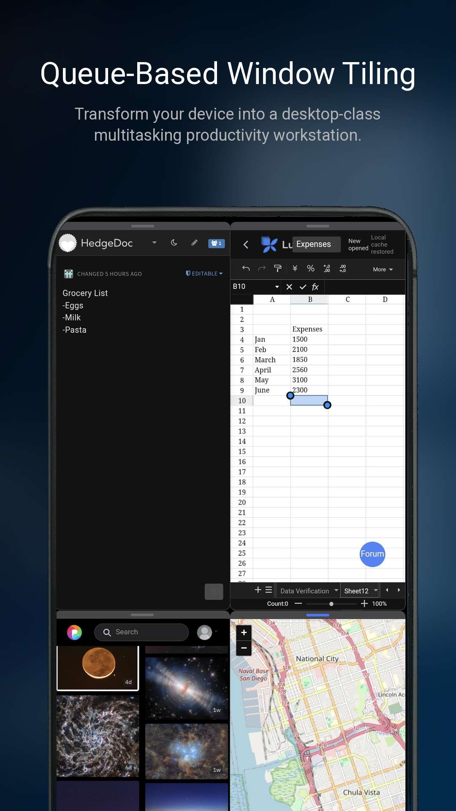
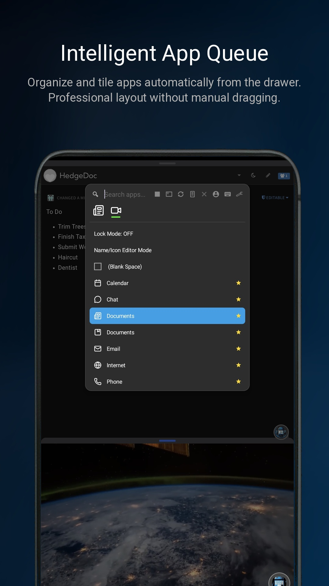
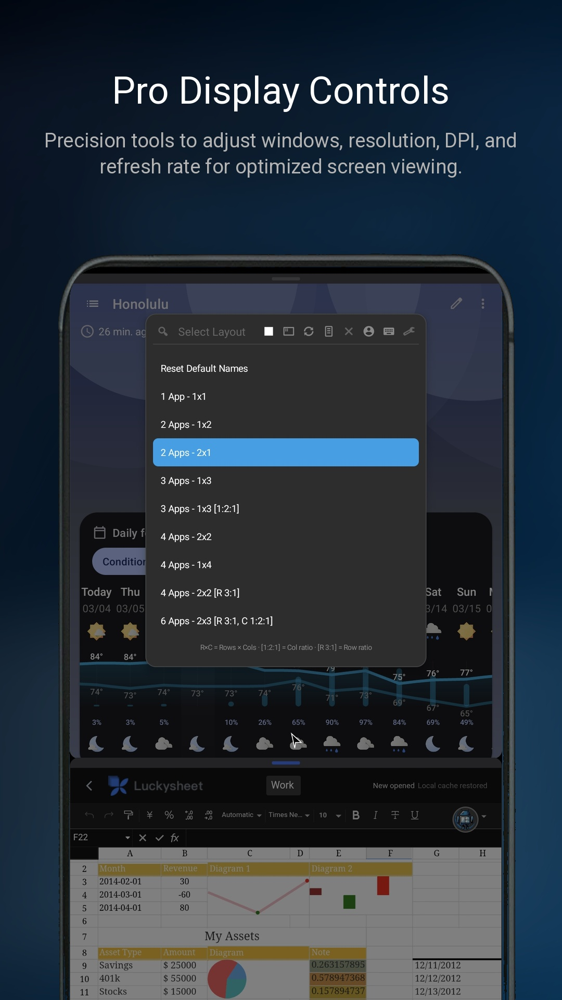
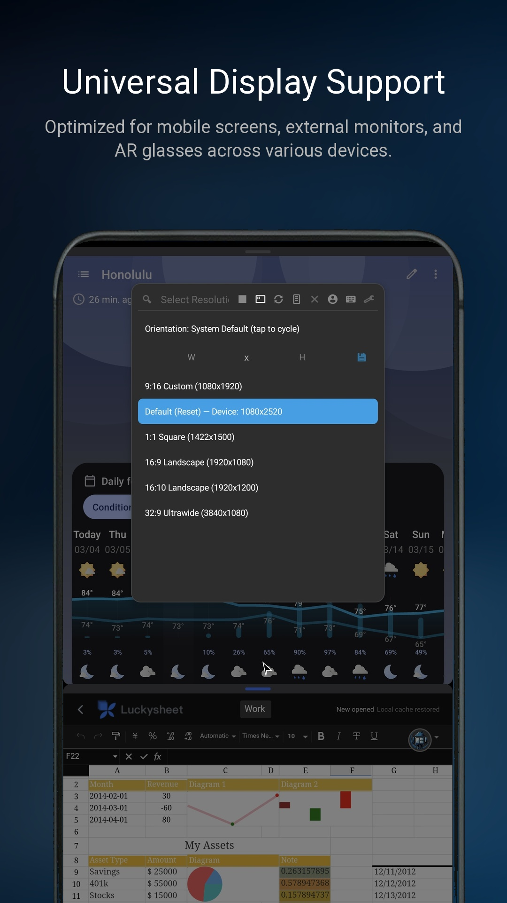
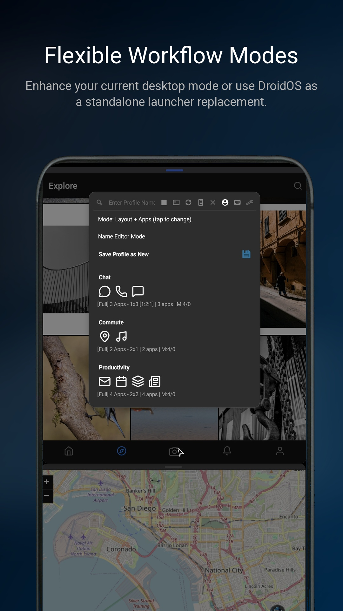
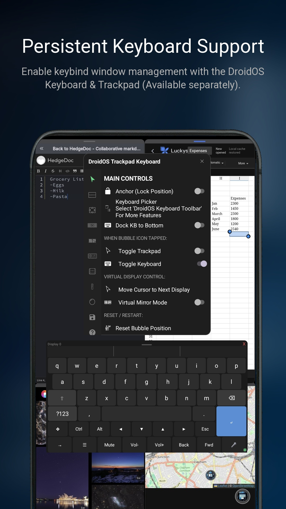
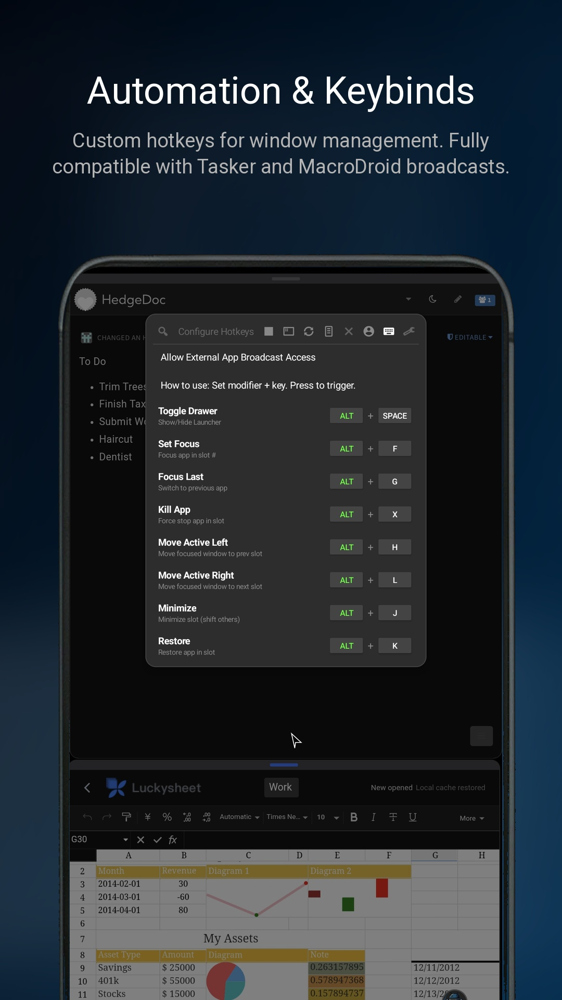
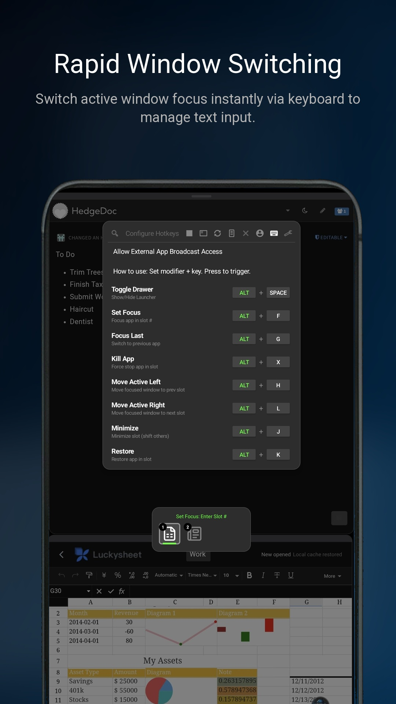

DroidOS is a two-app Android productivity suite: -
DroidOS Launcher: floating launcher, queue-based tiling
window manager, display control, and automation hotkeys. -
DroidOS Trackpad Keyboard: overlay trackpad + keyboard +
Dock IME toolbar for keyboard/mouse control and typing workflows.
It is designed for phones, foldables, cover displays, external monitors, and AR glasses.

DroidOSLauncher: Launcher app (window/display
management)DroidOSKeyboardTrackpad: Trackpad + keyboard app (input
and typing)Important: open each app folder separately in Android Studio. Do not open the monorepo root as a single Android Studio project.
DroidOS Launcher and grant required
permissions.DroidOS Trackpad Keyboard and complete the setup
steps (Accessibility, overlay, keyboard/IME related steps).Launch/Reset Trackpad in Settings if the
input overlay needs to be reattached.Launcher now runs in instant behavior only.
There is no separate Execute mode anymore. Queue/layout changes apply immediately.
Tile placement follows queue order.
Example with a 4-tile layout: - tile 1 = queue item 1 - tile 2 = queue item 2 - tile 3 = queue item 3 - tile 4 = queue item 4
Launcher Settings includes: - Screen Off (Standard) -
Screen Off (Alternate) -
Switch Display (Current X) -
Virtual Display (1080p) - resolution controls - DPI
controls - orientation controls - refresh rate controls
Virtual Display (1080p) in Launcher
Settings.Switch Display to move launcher targeting to the
virtual display.Advanced/manual users can still use shell-style display workflows, but the in-app toggle flow above is the easiest and most reliable path for normal use.
DroidOS coordinates tiled windows with normal full-screen apps: - Tiled apps can auto-minimize when a full-screen app takes focus. - Tiled apps restore when returning to managed/tiled context. - This avoids tiled overlays blocking normal full-screen workflows.
Launcher Settings contains: - top/bottom manual margins -
Auto-Adjust Margin for Keyboard (Tiled Apps) -
Auto-Shrink for Keyboard
When DroidOS toolbar keyboard/IME is active, launcher can adjust tiled app space dynamically based on keyboard visibility and dock/toolbar state.
This integration prevents overlap between: - tiled app windows - keyboard UI - dock/toolbar area
Result: more stable typing layouts in multi-window use.
Mirror mode is for remote/virtual usage where you need to type without directly viewing the phone display.
Typical use cases: - external monitor - AR glasses - screen-off/headless workflows
Spacebar Mouse Extended Mode to keep
mouse mode active until turned offKeyboard blocking is for devices that force OEM keyboards in unwanted situations (for example some cover-screen Samsung flows).
Use it when the system keyboard interrupts DroidOS keyboard workflows.
The keyboard supports: - swipe prediction - tap prediction - learned/custom dictionary words - prediction updates in both normal and mirror workflows
Add words: - tap new-word predictions to learn/save into custom dictionary
Delete learned words: - touch and hold a prediction, then use trash/delete action
Persistence behavior: - kept during app upgrades - deleted if app storage is cleared or app is uninstalled
Trackpad keyboard and launcher coordinate display state with broadcasts.
In virtual workflows, display/mode-aware settings (position/size and
related layout preferences) are remembered by
display/resolution/orientation/mode, with shared handling for remote
display IDs (display 2+) to keep behavior consistent across
reconnects.
In Launcher Hotkeys tab: -
Allow External App Broadcast Access
When ON, third-party automation tools can trigger launcher commands. When OFF, external launcher command access is blocked (except trusted internal app coordination as designed).
Launcher and Keyboard exchange broadcast state for: - keybind updates - remote key forwarding - IME visibility/tiled state sync - margin and display coordination - virtual/physical display transitions
DroidOS can be integrated with automation apps (for example Tasker or MacroDroid) and with ADB broadcast commands.
This supports advanced workflows such as: - one-tap virtual workspace startup - mirror/display mode switching - scripted launcher command execution
Launch/Reset Trackpad.Contributions are welcome.
DroidOSLauncherDroidOSKeyboardTrackpadLicensing is split by git history boundary:
foss-final (release v4.0).foss-final on main.For a fully FOSS codebase, use the community/fdroid
branch (GPLv3). See LICENSE.txt for the current branch
license details.
If you want to support development: https://ko-fi.com/katsuyamaki






